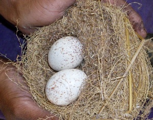
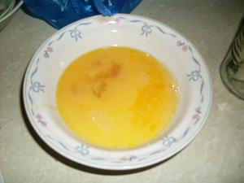

atelug  
/ʔatɔlug/
n.
“egg”
1.
n.
(atelug) an egg
Wrd.Gloss: egg
atelug te manuk
chicken egg
Eng. egg
Tag. itlóg
Ceb. itlog?itlug?
Ilo.: ítlog
OCM: Diet (262), Ethnozoology (825)
DDP: Egg (1.6.3.1), Animal life cycle (1.6.3)
Idiom: maangkag te atelug
—egg white
Idiom: natù te atelug
—egg yolk
Idiom: luwit te atelug
—egg shell
Online dict status: -
Usage level: B
n.
(atelug_te_bakbak) egg of the frog
Eng. egg of the frog
Online dict status: -
Usage level: R
vi.
for a chicken (manuk) or duck, etc. (eg-atelug, mig-atelug/in-atelug, atelug, agent, eg><ø-) to lay an egg somewhere (eg-ateluhan, in-ateluhan/mig-ateluhan/pig-ateluhan, ateluhi, location, eg><an-)
Kenè niyu tulewuka ka manuk ku due su eg-atelug.
Don't stumble to my chicken over there because it will lay egg.
Eng. lay egg; egg, lay
OCM: Ethnozoology (825)
DDP: Egg (1.6.3.1)
Online dict status: -
Usage level: M
v.
for someoneto enable chickens (or other birds) (imaatelug, mig-maatelug/pigmaatelug, theme, ima-) to produce eggs (i.e., by providing them with the conditions and food that they need)
Imaatelug dan e ka me manuk.
They let chickens to produce eggs.
Eng. produce eggs
Ceb. ipaitlog
Online dict status: -
Usage level: R
2.
n.
a euphemism for testicle
Mani buwa te kenè eg-ateluhan te manuk seini se salahan ne inggimu ku.
Why chicken doesn't lay her egg on the nest I made.
Wrd.Gloss: testicle
Syn. butù
Eng. testicle
Online dict status: -
Usage level: MS
n.
a derogatory term for the scrotum
Eng. derogatory
Online dict status: -
Usage level: RS
Updated by: RJH,RJH,AAA,QDL,NJK,RAA,QDL
Last updated: 01/Jan/2010
"atelug" in text "The Barrio Fiesta (Egsahakeen) and Castration"
"atelug" in healthbook "Keilangan ka meupiya neg kakeen"
"atelug" in healthbook "Keilangan ka meupiya neg kakeen"
"atelug" in healthbook "Keilangan ka meupiya neg kakeen"
"atelug" in healthbook "Keilangan ka meupiya neg kakeen"
"atelug" in healthbook "Keilangan ka meupiya neg kakeen"
This page last updated: 03-Jan-2020
Copyright © 2009-2014, Matigsalug Language Christian Association, Inc